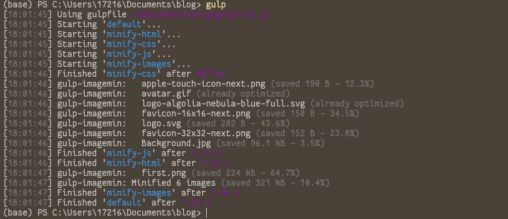
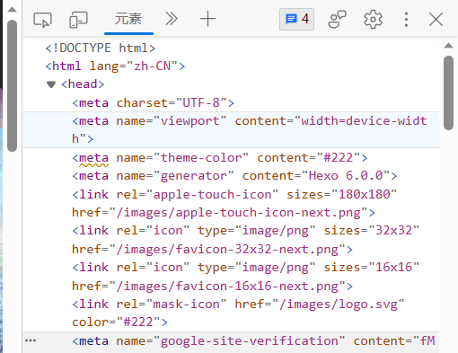

这几天也算是查资料+自己研究终于美化了一个自己较为满意的博客。
效果图如下，接下来上教程，版本是Hexo-6.0.0+Next-8.17.1，其它版本文件结构会有所不同。
安装和部署可以看我另一篇博客《重拾hexo》，这篇只讲美化部分。
参考文档Hexo-NexT 以及Hexo+Next主题优化 - 知乎 (zhihu.com) 和Ubuntu + Hexo + Next 8.0 进阶美化篇二 - 知乎 (zhihu.com)
其中很多都可以在文档找到详细教程 ，建议手动查阅文档
0.写在前面 在写这篇教程的时候，我也学到了很多，对next主题的把握和美化过程有了更好的认知，因此有必要在前面写点内容。
首先是NexT _config.yml配置文件，配置文件是按块分布 的，主要有Menu Settings、Sidebar Settings、Footer Settings、Post Settings、Custom Page Settings、Misc Theme Settings等等，可以从名字看出来每块主要的内容，我的这篇教程也因此是按块写 的。官方文档和这个配置文件配合的很好，真的很建议配合文档食用。
然后是，不同版本Next的文件结构会有差异，按照教程美化的时候一定要学会方法。举个例子，在做菜单栏背景圆角和透明的时候，我参考网上的一篇教程，
1 2 3 4 .header-inner { border-radius : 30px 30px 30px 30px ; box-shadow : 8px 7px 2px 0 rgba (0 ,0 ,0 ,0.12 ), 7px 4px 1px -2px rgba (0 ,0 ,0 ,0.06 ), 0 1px 5px 0 rgba (0 ,0 ,0 ,0.12 ); }
可是网页并没有发生反应，猜测是元素名字改变了，我在这个目录下寻找blog\themes\next\source\css\_common\outline\header，index.styl里并没有这个header-inner这个元素，相比之下，sidebar-inner就很好的发挥了作用，我尝试了菜单栏的其它元素，包括menu，site-meta，site-nav等等，总有一个白底留在那里，试了一个晚上，真的头疼。第二天早上，F12告诉我那个元素是header.header，试了以下，确实成功了。因此，学会怎么改是最重要的，毕竟，不一定每个版本都有教程。
另外，在尝试的过程中，对next的文件结构有了大致的把我，在next根目录中，next\layout中放置的html的相关内容，虽然没学过html，但是尝试着还是修改了部分内容，如修改了归档界面统计日志数量的那行字，删除了前面的语气和后面的“继续加油”。
在next\source\css下则放着有关css的内容，熟悉文件命名的含义，就可以尝试着配合F12自行修改了，因为背景图片的原因，网页底部的灰色字体不太清楚，我就尝试着改成了黑色。当然，不建议这样修改源码，建议通过Next主题提供的个性化文件如styles.styl修改（下文会提到）。
最后有个小tips，建议本地预览，修改文件后保存刷新网页即可，不需要再过一遍hexo三连。
记一些文件用途：
next\source\css_mixins.styl 个人理解的css中的函数，主要用来复用。
1.切换布局样式 在NexT _config.yml文件中修改，Next提供了四种布局，个人最喜欢Pisces，展示主题也是Pisces
1 2 3 4 5 # Schemes # scheme: Muse # scheme: Mist scheme: Pisces # scheme: Gemini
其中Gemini主题基本样式与Pisces相同，不同点在于网站默认界面在“归档”。
2.添加背景图片 在NexT _config.yml配置文件中找到这段
1 2 3 4 5 6 7 8 9 10 11 12 13 14 # Define custom file paths. # Create your custom files in site directory `source/_data` and uncomment needed files below. custom_file_path: #head: source/_data/head.njk #header: source/_data/header.njk #sidebar: source/_data/sidebar.njk #postMeta: source/_data/post-meta.njk #postBodyStart: source/_data/post-body-start.njk #postBodyEnd: source/_data/post-body-end.njk #footer: source/_data/footer.njk #bodyEnd: source/_data/body-end.njk #variable: source/_data/variables.styl #mixin: source/_data/mixins.styl style: source/_data/styles.styl
可以看到Next为我们提供了个性化的一些接口，去掉最后一行的注释，在\blog\source\文件夹中新建文件夹，命名为_data，在其中新建名为styles.styl的文件，打开编辑，输入以下内容。
1 2 3 4 5 6 7 8 9 10 11 12 13 //全局布局美化代码 //url:Bolg/themes/next/source/images body { background-image:url (/images/Background.jpg ); //图像是否重复 background-repeat : no-repeat; //图像固定 background-attachment : fixed; //图像位置 background-position : center; //宽高占屏幕百分比 background-size : 100% 100% ; }
手动在blog/themes/next/source/images中放入图片命名为Background.jpg即可
3.菜单栏修改 在NexT _config.yml文件中找到菜单栏部分
1 2 3 # --------------------------------------------------------------- # Menu Settings # ---------------------------------------------------------------
3.1 板块数量修改 默认的菜单栏只有“首页”和“关于”两个板块，Next为我们提供了其它可选项，在NexT _config.yml文件中修改。
找到Menu Settings，可以看到menu下有很多其它可选项，通过用法说明可以明白，冒号前是板块名字，后面分别是目录和图标，其中图标可以自行到Font Awesome，一套绝佳的图标字体库和CSS框架 (dashgame.com) 替换成心仪的图标。
1 2 3 4 5 6 7 8 9 10 11 12 13 # Usage: `Key: /link/ || icon` # Key is the name of menu item. If the translation for this item is available, the translated text will be loaded, otherwise the Key name will be used. Key is case-sensitive. # Value before `||` delimiter is the target link, value after `||` delimiter is the name of Font Awesome icon. # External url should start with http:// or https:// menu: home: / || fa fa-home about: /about/ || fa fa-user tags: /tags/ || fa fa-tags categories: /categories/ || fa fa-th archives: /archives/ || fa fa-archive #schedule: /schedule/ || fa fa-calendar #sitemap: /sitemap.xml || fa fa-sitemap #commonweal: /404/ || fa fa-heartbeat
可以参考我的配置，我增加了标签(tags)、分类(categories)和归档(archives)。
另外，还需要对一些选项进行配置，建议参考菜单栏 - Hexo-NexT
配置文件中紧随其后可以对菜单后面的数字进行设置。
1 2 3 4 # Enable / Disable menu icons / item badges. menu_settings: icons: true badges: true
badges设置为true可以显示数字。
3.2 自定义菜单 除了给出的配置外，也可以自定义 ，比如，我想增加一个读书笔记，先去font awesome网站找到一个合适的图标，复制链接。然后在菜单新增一行readnotes: /readnotes/ || fa fa-book，到根目录输入
这个时候本地预览就能看到新的菜单了，不过显示是英文，而且不能新增笔记什么的，所以我们还要进行其它配置
首先到source/readnotes/index.md里，修改如下：
1 2 3 4 title: 读书笔记 date: 2023-07-06 11:52:27 type: readnotes comments: false
然后到blog\themes\next\languages\zh-CN.yml里，menu下新增一行映射readnotes: 读书笔记，这样显示的就会是中文了
接下来是定制点击读书笔记菜单后出现的页面，我们可以仿照“归档”的页面，归档是以时间线呈现的
3.3 搜索服务 参考搜索服务 - Hexo-NexT
3.4 样式修改 在styles.styl文件中添加以下内容，可根据我的注释按个人喜好修改
1 2 3 4 5 6 7 8 9 10 11 12 13 14 15 16 17 //菜单栏整体背景 header .header { //距离最上边的距离 margin-top : 5px ; //背景颜色，最后一个参数0 -1 代表透明度，越低越透明 background-color : rgba (255 ,255 ,255 ,0.7 ); //圆角，分别为左上，右上，右下，左下 border-radius : 30px 30px 30px 30px ; //阴影 box-shadow : 8px 7px 2px 0 rgba (0 ,0 ,0 ,0.12 ), 7px 4px 1px -2px rgba (0 ,0 ,0 ,0.06 ), 0 1px 5px 0 rgba (0 ,0 ,0 ,0.12 ); } //菜单栏上部黑框 .site-brand-container { background-color : rgba (0 , 0 , 0 , 0.9 ); border-radius : 30px 30px 0px 0px ; }
4.侧边栏修改 在NexT _config.yml配置文件中找到这段，侧边栏设置
1 2 3 4 # --------------------------------------------------------------- # Sidebar Settings # See: https://theme-next.js.org/docs/theme-settings/sidebar # ---------------------------------------------------------------
4.1 添加头像 在后面找到头像设置
1 2 3 4 5 6 7 8 # Sidebar Avatar avatar: # Replace the default image and set the url here. url: /images/first.png # # If true, the avatar will be displayed in circle. rounded: true # If true, the avatar will be rotated with the cursor. rotated: false
url后面为头像的地址，具体在blog\themes\next\source\images
rounded：代表头像框类型，true为圆形，false为方形
rotated：为头像旋转特效，true时，鼠标放在头像上会旋转。
4.2 添加github链接和email 继续在配置文件下方找到
1 2 3 4 5 6 7 8 9 10 11 12 13 14 # Social Links # Usage: `Key: permalink || icon` # Key is the link label showing to end users. # Value before `||` delimiter is the target permalink, value after `||` delimiter is the name of Font Awesome icon. social: GitHub: https://github.com/yourgithubname || fab fa-github E-Mail: mailto:youremail@126.com || fa fa-envelope #Weibo: https://weibo.com/yourname || fab fa-weibo #Twitter: https://twitter.com/yourname || fab fa-twitter #FB Page: https://www.facebook.com/yourname || fab fa-facebook #StackOverflow: https://stackoverflow.com/yourname || fab fa-stack-overflow #YouTube: https://youtube.com/yourname || fab fa-youtube #Instagram: https://instagram.com/yourname || fab fa-instagram #Skype: skype:yourname?call|chat || fab fa-skype
social:后为可以添加的内容，格式也在usage中说明了，可以根据需要添加，也可以自定义内容。
4.3 样式修改 修改透明度，添加圆角和阴影。
在styles.styl中添加以下内容
1 2 3 4 5 .sidebar-inner { background-color : rgba (255 ,255 ,255 ,0.7 ); border-radius : 30px 30px 30px 30px ; box-shadow : 8px 7px 2px 0 rgba (0 ,0 ,0 ,0.12 ), 7px 4px 1px -2px rgba (0 ,0 ,0 ,0.06 ), 0 1px 5px 0 rgba (0 ,0 ,0 ,0.12 ); }
每一行的意义可以参考3.菜单栏修改
5.文章部分修改 在NexT _config.yml中找到Post Setting部分
1 2 3 4 # --------------------------------------------------------------- # Post Settings # See: https://theme-next.js.org/docs/theme-settings/posts # ---------------------------------------------------------------
5.1 增加更新日期和字数统计 更新日期：在NexT _config.yml中post setting 下方找到
1 2 3 4 5 6 7 8 # Post meta display settings post_meta: item_text: true created_at: true updated_at: enable: true another_day: true categories: true
updated_at:enable后设置为true，即可显示更新日期。
字数统计可以参考字数统计 - Hexo-NexT
5.2 打开文章底部tag图标 继续在NexT _config.yml中post setting 下方找到
1 2 # Use icon instead of the symbol # to indicate the tag at the bottom of the post tag_icon: true
设置为true即可
5.3 添加评论 可以使用gitalk，参考[Gitalk]评论系统 - Hexo-NexT ，不过未知原因连不上，改用waline，参考 Waline 和Hexo博客进阶：为 Next 主题添加 Waline 评论系统 ，需要注意的是，博客所提供的配置可能过时，可以到blog\node_modules\@waline\hexo-next\default.yaml提取自己需要的配置到主题配置文件中。
另外，可以使用DaoVoice
5.4 样式修改 5.4.1 分割线修改 原版首页文章之间是以间距与一条短横线作为分文标记的，可以修改也可以删除
进入bolg/themes/next/source/css/_common/components/post/post-footer.styl，找到
1 2 3 4 5 6 7 8 9 10 11 12 13 14 .post-eof { background : $grey-light; //不想要横线的可以删除下面三行 //修改宽度 height : 3px ; //修改离正文距离 margin : $post-eof-margin-top auto $post-eof-margin-bottom; //修改长度占比 width : 100% ; .post-block :last-of-type & { display : none; } }
我这边删除了短横线，为下一步美化做准备。
5.4.2 post背景设置为透明 在styles.styl中添加以下内容
1 2 3 4 5 .main-inner { background-color : rgba (255 , 255 , 255 , 0 ); //控制元素内边距，依次为上右下左 padding : 10px 40px 40px 40px ; }
5.4.3 宽度修改 修改文件source/css/_variables/Pisces.styl，根据主题选择修改的文件。
1 2 3 $content-desktop = 'calc(100% - %s)' % unit($content-desktop-padding / 2, 'px'); $content-desktop-large = 80em; $content-desktop-largest = 80%;
主要影响元素为第二行，多修改尝试即可
5.4.4 post-block样式修改 post-block就是右侧的一篇篇文章板块
在styles.styl中添加以下内容
1 2 3 4 5 6 7 8 9 10 11 12 13 14 .post-block { //背景颜色及透明度 background-color : rgba (255 , 255 , 255 , 1 ); //设置元素的顶部外边离相邻元素的距离 margin-top : 24px ; //设置元素的底部外边离相邻元素的距离 margin-bottom : 24px ; //控制元素内边距 padding : 30px ; //圆角 border-radius : 30px 30px 30px 30px ; //阴影 box-shadow : 8px 7px 2px 0 rgba (0 ,0 ,0 ,0.12 ), 7px 4px 1px -2px rgba (0 ,0 ,0 ,0.06 ), 0 1px 5px 0 rgba (0 ,0 ,0 ,0.12 ); }
6.网页底部修改 6.1 心形修改 提供两种改动方式：1.改为其它图标。2.改为其它文字或者删除。
第一种：在NexT _config.yml中找到
1 2 3 4 # --------------------------------------------------------------- # Footer Settings # See: https://theme-next.js.org/docs/theme-settings/footer # ---------------------------------------------------------------
往下找到
1 2 3 4 5 6 7 icon: # Icon name in Font Awesome. See: https://fontawesome.com/icons name: fa fa-heart # If you want to animate the icon, set it to true. animated: false # Change the color of icon, using Hex Code. color: "#ff0000"
可以修改图标开关、内容、和颜色
第二种：进入blog\themes\next\layout\_partials\footer.njk，找到相似部分并修改，我这里由于修改过，不记得原文了，这里是把心形修改为了“by”（第6行），当然也可以直接删除。
1 2 3 4 5 6 7 8 9 {%- if theme.footer.copyright !== false %} <div class ="copyright" > {%- set copyright_year = date(null, 'YYYY') %} © {% if theme.footer.since and theme.footer.since != copyright_year %}{{ theme.footer.since }} – {% endif %} <span itemprop ="copyrightYear" > {{ copyright_year }}</span > <span > by </span > <span class ="author" itemprop ="copyrightHolder" > {{ theme.footer.copyright or author }}</span > </div > {%- endif %}
6.2 强力驱动修改 提供两种修改方式：1.关闭功能。2.修改文字
第一种：在NexT _config.yml中找到footer setting部分后，继续往下找到powered
1 2 # Powered by Hexo & NexT powered: true
设置为false即可关闭
同理可以开关copyright部分
1 2 3 # If not defined, `author` from Hexo `_config.yml` will be used. # Set to `false` to disable the copyright statement. copyright:
第二种：进入blog\themes\next\layout\_partials\footer.njk，找到最后部分，改为如下
1 2 3 4 5 6 {%- if theme.footer.powered %} <div class ="Thanks" > {%- set next_site = 'https://theme-next.js.org' + '/' %} {{- __(' Thanks ' + next_url('https://hexo.io', 'Hexo') + ' & ' + next_url(next_site, 'NexT')) }} </div > {%- endif %}
这是修改后的效果，可以自行修改为其它文字
7.其它美化 7.1 右上角增加github 在NexT _config.yml中找到
1 2 3 4 # `Follow me on GitHub` banner in the top-right corner. github_banner: enable: true permalink: https://github.com/Astonefishsky
设置为true并修改链接即可
7.2 静态资源压缩 老规矩，先上版本
在部署到github上访问时，图片总是加载的很慢很慢，于是采用静态资源压缩的方式加快访问速度。
在blog目录下安装gulp，和相关插件
1 2 3 4 5 6 npm install gulp -g npm install gulp-minify-css --save npm install gulp-uglify --save npm install gulp-htmlmin --save npm install gulp-htmlclean --save npm install gulp-imagemin --save
在blog根目录新建文件gulpfile.js，写入
1 2 3 4 5 6 7 8 9 10 11 12 13 14 15 16 17 18 19 20 21 22 23 24 25 26 27 28 29 30 31 32 33 34 35 36 37 38 39 40 41 42 43 44 45 46 47 48 49 50 51 52 var gulp = require ('gulp' );var minifycss = require ('gulp-minify-css' );var uglify = require ('gulp-uglify' );var htmlmin = require ('gulp-htmlmin' );var htmlclean = require ('gulp-htmlclean' );var imagemin = require ('gulp-imagemin' );gulp.task('minify-html' , function ( return gulp.src('./public/**/*.html' ) .pipe(htmlclean()) .pipe(htmlmin({ removeComments : true , minifyJS : true , minifyCSS : true , minifyURLs : true , })) .pipe(gulp.dest('./public' )) }); gulp.task('minify-css' , function ( return gulp.src('./public/**/*.css' ) .pipe(minifycss({ compatibility : 'ie8' })) .pipe(gulp.dest('./public' )); }); gulp.task('minify-js' , function ( return gulp.src('./public/js/**/*.js' ) .pipe(uglify()) .pipe(gulp.dest('./public' )); }); gulp.task('minify-images' , function ( return gulp.src('./public/images/**/*.*' ) .pipe(imagemin( {'verbose' : true })) .pipe(gulp.dest('./public/images' )) }); gulp.task('default' ,gulp.parallel( 'minify-html' ,'minify-css' ,'minify-js' ,'minify-images' ));
因为不可知原因一直error，所以压缩图片部分代码被我注释掉了
不过实测可用

7.3 翻页按钮 设置背景后，由于翻页部分背景默认透明且按钮透明，所以要修改一下按钮部分。
在styles.styl中添加以下内容
1 2 3 4 5 6 7 8 9 10 11 12 13 14 15 16 //翻页按钮 .page-number { //白色近透明 background-color : rgba (255 ,255 ,255 ,0.85 ); border-radius : 10px 10px 10px 10px ; margin : 5px ; box-shadow : 2px 2px 2px 0 rgba (0 ,0 ,0 ,0.12 ), 2px 2px 1px -2px rgba (0 ,0 ,0 ,0.06 ), 0 1px 2px 0 rgba (0 ,0 ,0 ,0.12 ); } //翻页框 .pagination { background-color : rgba (255 ,255 ,255 ,0.7 ); margin-top : 5px ; padding : 5px ; border-radius : 10px 10px 10px 10px ; box-shadow : 8px 7px 2px 0 rgba (0 ,0 ,0 ,0.12 ), 7px 4px 1px -2px rgba (0 ,0 ,0 ,0.06 ), 0 1px 5px 0 rgba (0 ,0 ,0 ,0.12 ); }
当前选中按钮的颜色要到原代码文件中修改，找到themes\next\source\css\_common\scaffolding\pagination.styl和themes\next\source\css\_variables\base.styl，在pagination.styl中可以看到如下，选中按钮的背景颜色为$pagination-active-bg
1 2 3 4 5 $page-number-current { background : $pagination-active-bg; border-color : $pagination-active-border; color : $pagination-active-color; }
我们打开base.styl，找到$pagination-active-bg,修改为想要的颜色即可，如我这里修改为橙色
1 2 $orange-light =#ff9933 $pagination-active-bg = $orange-light;
其它部分可同理按喜好修改
7.4 字体修改 参考Hexo NexT 主题的字体更换 | Bambrow’s Blog
7.5 添加站长验证 添加站长验证，以让各搜索引擎收录我们的网站。
在NexT _config.yml中找到
1 2 3 4 # --------------------------------------------------------------- # SEO Settings # See: https://theme-next.js.org/docs/theme-settings/seo # ---------------------------------------------------------------
然后往下，有Google，Bing，Yandex，Baidu四个可选引擎。
以谷歌为例，进入谷歌Search Console网站 ，选择右侧网址前缀类型，输入自己的博客网址即https://yourgithubname.github.io
然后点击继续，选择HTML标记类型，按照要求复制HTML标记，打开NexT _config.yml里对应的谷歌站长验证部分，将content字段的内容复制（不包含双引号）到google_site_verification后即可。
最后hexo三连，等待网站更新后，点击验证即可看到验证成功。不知道是否更新成功的可以在网站首页打开F12，看看第一个head里有没有google_site_verification，如下图

其它搜索引擎方法类似，其中Bing可以直接导入谷歌已验证的网站，跳过验证过程，而百度需要填写较多信息，看自己需求吧。验证过后都会有1-2天的处理时间，最好尽快提交站点地图以加快进度。关于站点地图，可自行百度。